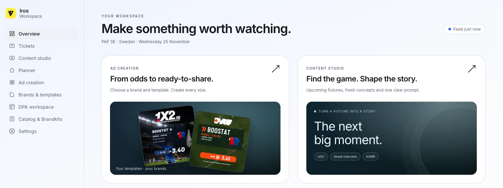
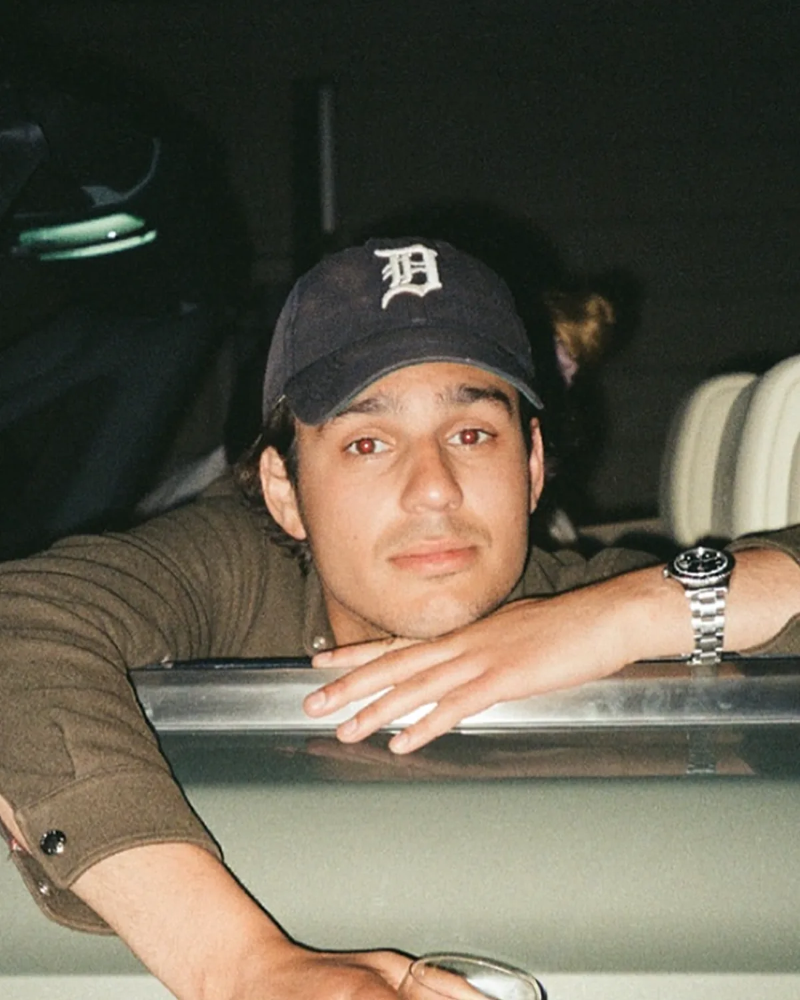

I build the AI
I work with
I make image and film with AI every day, and I build personal systems around the work: for one person or one team, with their brands, their templates and their way of working.

Iros
My own app for making sports ads. Drop in a screenshot of a boosted bet and Iros reads the teams and odds. You check them, pick a brand, and it renders the image and video ads in every size.
It runs on my Mac and works with Claude or a local model, along with Photoshop and After Effects.
AI film made with Higgsfield and Seedance. I also build custom MCP workflows that connect Claude to the tools I design in.

I design brands, campaigns and motion, currently at Paf. I led 1X2 from positioning to app. Before that I worked on shoes at Givenchy and watches at Corniche.
- 2024 to now
- Paf, designer
- 2023 to 2024
- Givenchy, graphic and product designer
- 2023
- Corniche Watches, assistant to the chief of design
- 2020 to 2023
- LISAA, bachelor in graphic and product design
- 2018 to 2020
- Utsikt, graphic designer, for Google, BMW and Huawei
Also H&M and Ryska Posten. Swedish, English, Spanish, some French. CV (PDF)